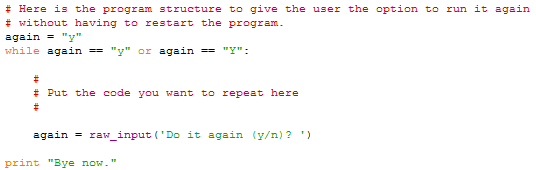

One practical thing the while statement enables you to do is to allow your
users to rerun a program without having to restart it, so they can for
example perform a series of conversions without having to restart the
program. The template to do this is,

The trick is that we use a variable called again which we
initialize to be the letter y. We then test the value of
again to see if it is either y or Y.
Obviously this test succeeds the first time because we have just initialized
the value of again in the line above. But, at the bottom of the
while loop we have a raw_input statement where we read in a
response from the user to a query about whether they would like to repeat the
program. Once they enter their value control goes back up to the
while statement where their input is tested. If they entered a
y or a Y the body of the loop is repeated, but if
they entered anything else the body is skipped, the message Bye
now. is displayed, and the program terminates.
Here is an example of this template being put to work to allow the user to carry out multiple f2c conversions during one run of a program,